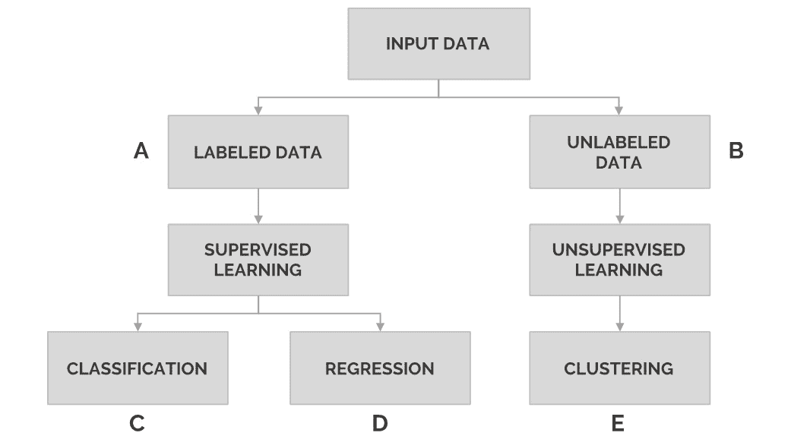
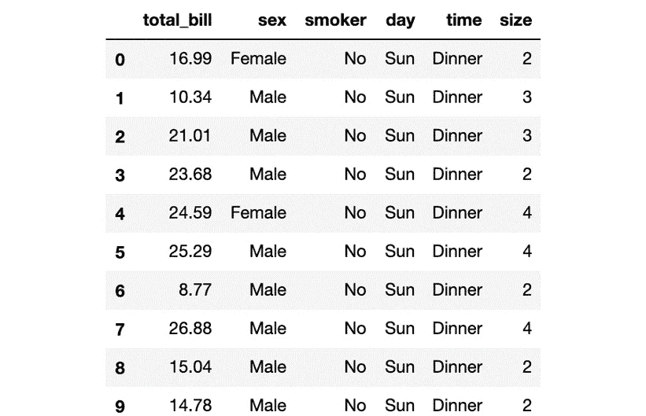
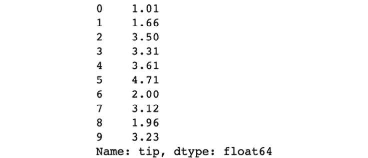
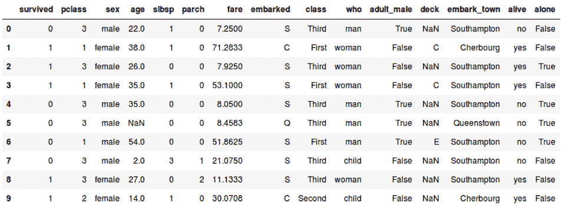
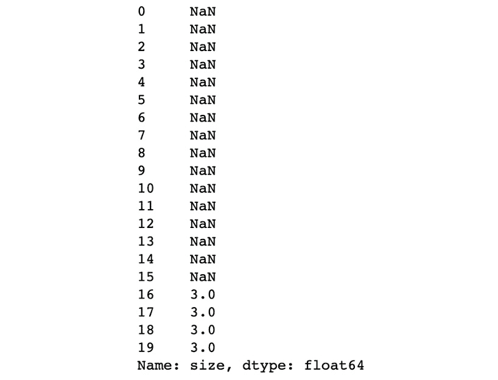
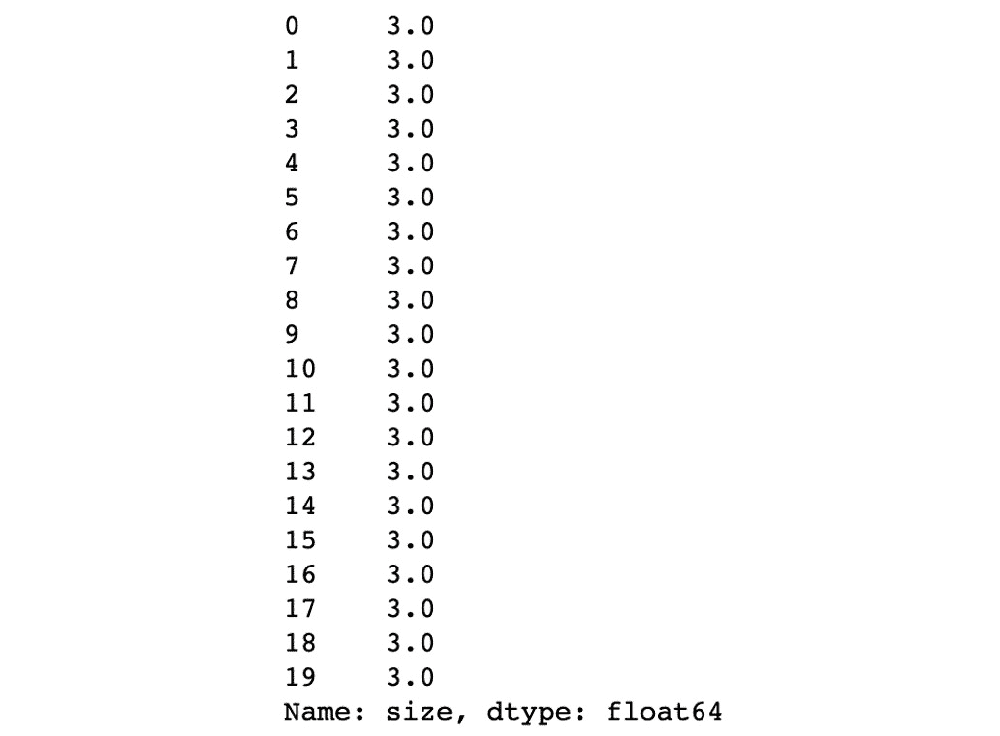
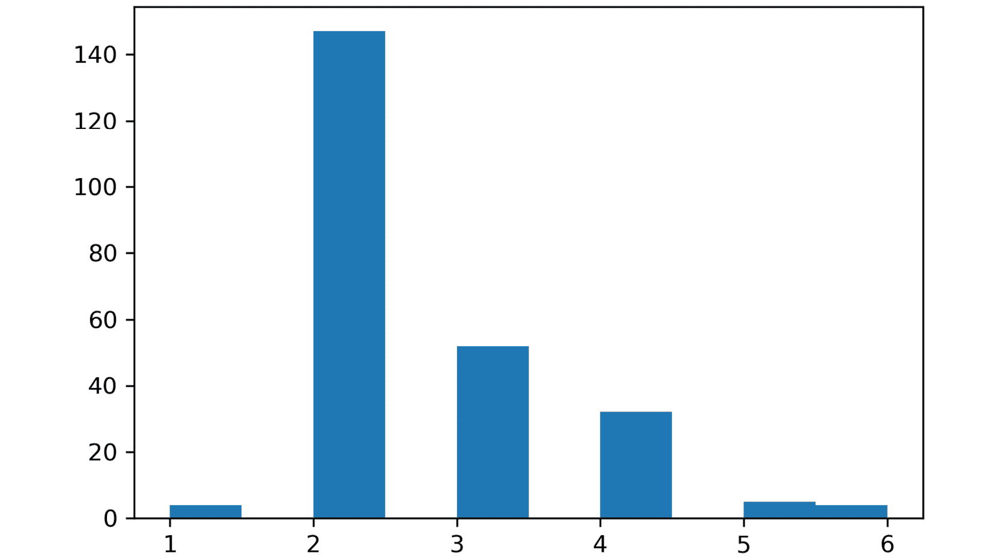
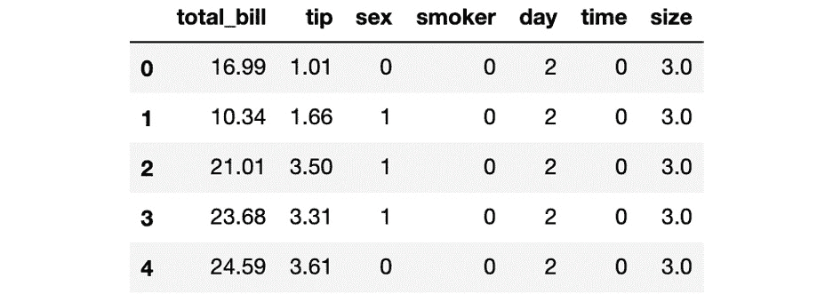
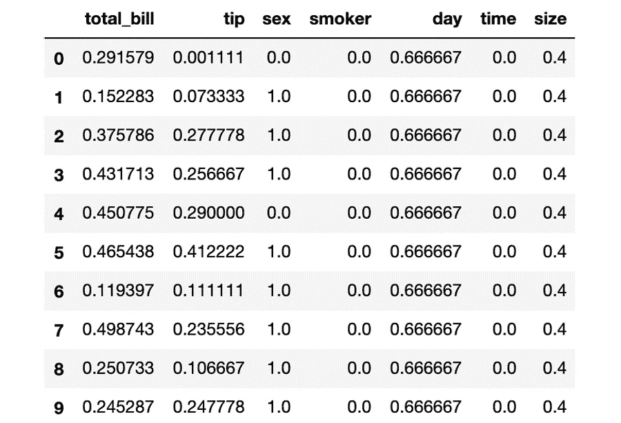
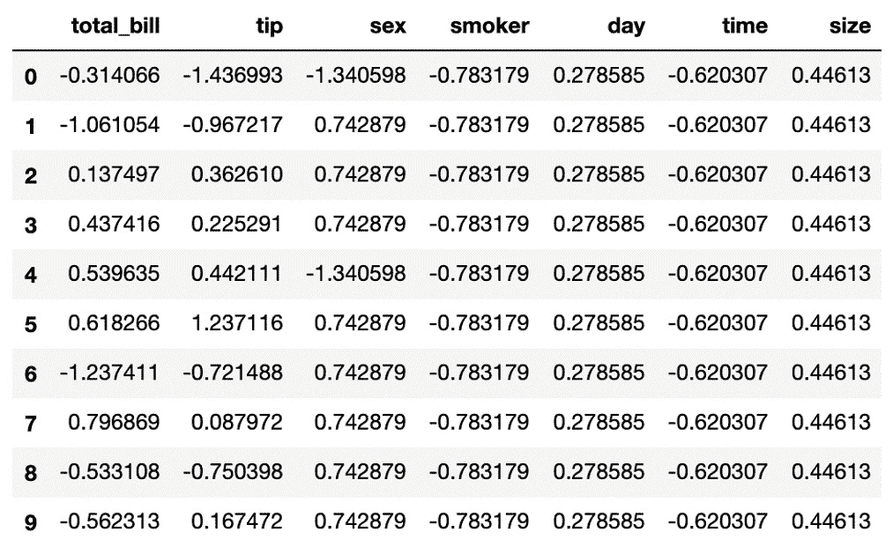

概观
本章介绍了本书的两个主要主题:机器学习和scikit-learn。通过阅读这本书，你将了解机器学习的概念和应用。您还将了解数据在机器学习中的重要性，以及解决各种数据问题的数据预处理的关键方面。本章还将介绍scikit-learn的基本语法。到本章结束时，你将对scikit-learn的语法有一个牢固的理解，这样你就可以解决简单的数据问题，这将是开发机器学习解决方案的起点。
简介
机器学习 ( ML )，毫无疑问，是当今最相关的技术之一，因为它旨在将信息(数据)转化为可用于做出明智决策的知识。在这一章中，你将了解到ML在当今世界的不同应用，以及数据所扮演的角色。这将是贯穿本书介绍不同数据问题的起点，您将能够使用scikit-learn解决这些问题。
Scikit-learn是一个文档丰富且易于使用的库，它通过使用简单的方法来促进ML算法的应用，最终使初学者能够对数据建模，而无需深入了解算法背后的数学知识。此外，由于该库的易用性，它允许用户对数据问题实现不同的近似(即，创建不同的模型)。此外，通过消除算法编码的任务，scikit-learn允许团队将注意力集中在分析模型的结果上，以得出关键的结论。
音乐流媒体领域的全球领先公司Spotify使用scikit-learn，因为它允许他们针对一个数据问题实施多种模型，然后轻松地将其与现有的开发联系起来。这个过程改进了获得有用模型的过程，同时允许公司毫不费力地将它们插入到当前的应用程序中。
另一方面，booking.com使用scikit-learn是因为该库提供了各种各样的算法，允许他们完成公司依赖的不同数据分析任务，如构建推荐引擎、检测欺诈活动和管理客户服务团队。
考虑到上述几点，本章还解释了scikit-learn及其主要用途和优点，然后继续提供scikit-learn 应用程序编程接口 ( API )语法和功能的简要说明。此外，还将展示数据的表示、可视化和规范化过程。上述信息将帮助我们理解开发一个ML模型需要采取的不同步骤。
在本书的以下章节中，您将探索可用于解决实际数据问题的主要ML算法。您还将了解可用于测量算法性能的不同技术，以及如何相应地改进它们。最后，您将探索如何通过保存、加载和创建API来利用一个经过训练的模型。
机器学习简介
机器学习 ( ML )是人工智能 ( AI )的一个子集，它由各种各样的算法组成，这些算法能够从提供给它们的数据中进行学习，而无需为某项任务专门编程。这种从数据中学习的能力使算法能够创建模型，这些模型能够通过在历史数据中找到模式并在新数据提供给模型时改进它们来解决复杂的数据问题。
这些不同的ML算法使用不同的近似方法来解决一个任务(如概率函数)，但关键要素是它们能够为一个特定的数据问题考虑无数的变量，使最终的模型比人类更好地解决任务。使用ML算法创建的模型用于在输入数据中查找模式，以便这些模式可用于在未来做出明智的预测。
ML的应用
可以使用ML算法解决的一些流行任务是价格/需求预测、产品/服务推荐和数据过滤等。以下是此类任务的现实示例列表:
- 按需价格预测:服务价格随需求变化的公司可以使用ML算法预测未来需求，并确定他们是否有能力满足需求。例如，在运输行业，如果未来需求低(淡季)，机票价格就会下降。另一方面，如果需求高(旺季)，航班可能会涨价。
- 娱乐推荐:使用你当前使用的音乐，以及与你相似的人的音乐，ML算法可以构建能够推荐你可能喜欢的新唱片的模型。视频流媒体应用也是如此，网上书店也是如此。
- 邮件过滤 : ML已经使用了一段时间，用于过滤收到的邮件，以便将垃圾邮件从您想要的邮件中分离出来。最近，它还能够将不想要的电子邮件分类成更多的类别，如社交邮件和促销邮件。
选择正确的ML算法
当谈到开发ML解决方案时，重要的是要强调，通常情况下，数据问题没有唯一的解决方案，就像没有适合所有数据问题的算法一样。据此并考虑到ML领域有大量的算法，针对某个数据问题选择合适的往往是区分优秀模型和平庸模型的转折点。
以下步骤有助于将算法的范围缩小到几个:
- Understand your data: Considering that data is the key to being able to develop any ML solutions, the first step should always be to understand it in order to be able to filter out any algorithm that is unable to process such data.
例如，考虑到数据集中的要素和观测值的数量，就有可能确定是否需要一种能够使用小数据集产生出色结果的算法。认为数据集很小的实例/要素的数量取决于数据问题、输出的数量等。此外，通过了解数据集中的字段类型，您还将能够确定是否需要能够处理分类数据的算法。
A) algorithms. On the other hand, datasets without a target feature are known as unlabeled data and are solved using unsupervised learning algorithms (B).此外，输出数据(您期望从模型中得到的输出形式)在确定要使用的算法时也起着关键作用。如果模型的输出需要是一个连续的数，那么要解决的任务就是一个回归问题(
C)。另一方面，如果输出是一个离散值(例如一组类别)，那么手头的任务就是一个分类问题(D)。最后，如果输出是观察值的子组，要执行的过程是聚类任务(E):图1.1:演示任务的划分
这种任务的划分将在本章的监督和非监督学习部分进行更详细的探讨。
- 选择一组算法:一旦执行了前面的步骤，就有可能筛选出对输入数据表现良好并且能够达到预期结果的算法。根据您的资源和时间限制，您应该从这个apt算法列表中选择您想要在您的数据问题上测试的算法，考虑到尝试多种算法总是一个好的实践。
这些步骤将在下一章中以实际数据问题为例进行更详细的解释。
Scikit-Learn
scikit-learn由David Cournapeau于2007年创建，是Google代码之夏项目的一部分，是一个开源Python库，旨在简化基于内置ML和统计算法的模型构建过程，而无需硬编码。它受欢迎的主要原因是其完整的文档、易于使用的API以及每天都在改进该库的许多合作者。
注意
你可以在http://scikit-learn.org找到scikit-learn的文档。
Scikit-learn主要用于建模数据，而不是操作或汇总数据。它为用户提供了一个易于使用的、统一的API，只需很少的学习就可以应用不同的模型，并且不需要真正的数学知识。
注意
为了理解模型，您需要了解的一些数学主题是线性代数、概率论和多元微积分。有关这些模型的更多信息，请访问https://towardsdatascience . com/the-mathematics-of-machine-learning-894 f 046 c 568。
scikit-learn库中可用的模型分为两类，即有监督的和无监督的，这两类模型都将在本章的后面进行深入解释。这种类别分类形式将有助于确定对特定数据集使用哪种模型，以从中获取最多信息。
除了主要用于预测监督学习问题中的未来行为和非监督学习问题中的聚类数据之外，scikit-learn还用于以下原因:
- 执行交叉验证和性能指标分析，以了解从模型中获得的结果，从而改进其性能
- 获取样本数据集来测试算法
- 执行特征提取以从图像或文本数据中提取特征
虽然scikit-learn被认为是ML领域初学者的首选Python库，但世界上有几家大公司在使用它，因为它允许他们通过将模型应用到现有的开发中来改进他们的产品或服务。它还允许他们快速实现对新想法的测试。
使用scikit-learn的一些领先公司如下:
- Spotify:最受欢迎的音乐流媒体应用程序之一，Spotify使用scikit-learn主要是因为该框架提供了各种各样的算法，以及在当前的开发中实现新模型是多么容易。Scikit-learn已被用作其音乐推荐模型的一部分。
- Booking.com:从开发推荐系统到防止欺诈活动，以及许多其他解决方案，这个旅游元搜索引擎已经能够使用scikit-learn来探索大量允许创建最先进模型的算法。
- Evernote:这个笔记和管理应用程序使用scikit-learn来处理训练分类模型所需的几个步骤，从数据探索到模型评估。
- Change.org: Thanks to the framework's ease of use and variety of algorithms, this non-profit organization has been able to create email marketing campaigns that reach millions of readers around the world.
注意
您可以访问http://scikit-learn . org/stable/references/references . html来发现其他正在使用sci kit-learn的公司，并了解他们使用它的目的。
总之，scikit-learn是一个开源的Python库，它使用一个API来将大多数ML任务(监督的和非监督的)应用于数据问题。它的主要用途是为数据建模，以便对看不见的观察结果进行预测；然而，它不应该局限于此，因为该库还允许用户基于被训练的模型预测结果，以及分析模型的性能，以及其他功能。
Scikit-Learn的优势
以下是将scikit-learn用于ML目的的主要优势列表:
- 易用性 : Scikit-learn的特点是一个干净的API，与其他库(如TensorFlow或Keras)相比，学习曲线较小。API因其统一性和简单明了的方法而广受欢迎。scikit-learn的用户不一定需要理解模型背后的数学。
- 一致性:其统一的API使得从一个模型到另一个模型的切换变得非常容易，因为一个模型所需的基本语法对于其他模型是相同的。
- 文档/教程:该库完全由文档支持，易于访问和理解。此外，它还提供了分步教程，涵盖了开发任何ML项目所需的所有主题。
- 可靠性和协作:作为一个开源库，scikit-learn受益于每天工作的多个协作者的输入，以提高其性能。来自不同背景的许多专家的参与不仅有助于开发一个更完整的库，而且有助于开发一个更可靠的库。
- 覆盖范围:当你浏览这个库拥有的组件列表时，你会发现它覆盖了大部分的ML任务，从监督模型(比如执行回归任务)到非监督模型(比如用于将数据聚类成子组的模型)。此外，由于其众多的合作者，新模型往往会在相对较短的时间内添加。
sci kit-Learn的缺点
以下是将scikit-learn用于ML目的的主要缺点列表:
- 不灵活:由于它的易用性，这个库趋向于不灵活。这意味着用户在参数调整或模型架构方面没有太多自由，例如梯度增强算法和神经网络。随着初学者转向更复杂的项目，这成为一个问题。
- Not good for deep learning: The performance of the library falls short when tackling complex ML projects. This is especially true for deep learning, as scikit-learn does not support deep neural networks with the necessary architecture or power.
注意
深度学习是ML的一部分，基于人工神经网络的概念。它使用一系列图层从输入数据中提取有价值的信息(要素)。在本书的后续章节中，您将了解神经网络，这是能够开发深度学习解决方案的起点。
总的来说，scikit-learn是一个优秀的初学者图书馆，因为它不需要太多的努力来学习它的用法，并且有许多补充材料被认为有助于它的应用。由于几个合作者的贡献，该库保持最新并适用于大多数当前的数据问题。
另一方面，它是一个简单的库，不适合更复杂的数据问题，如深度学习。同样，对于希望通过使用每个型号中可用的不同参数来将自己的能力提升到更高水平的用户，也不建议这样做。
其他框架
其他流行的ML框架如下:
- TensorFlow: Google的ML开源框架，至今仍是数据科学家中最受欢迎的。它通常与Python集成在一起，非常适合开发深度学习解决方案。由于它的流行，互联网上关于该框架的信息使得开发不同的解决方案变得非常容易，更不用说它是由Google支持的。
- PyTorch:这主要是由脸书人工智能研究实验室作为开源深度学习框架开发的。虽然这是一个相当新的框架(2017年发布)，但由于其易用性和Pythonic的性质，它越来越受欢迎。由于使用了动态图形计算，它允许简单的代码调试。
- Keras:这是一个开源的深度学习框架，通常对那些刚刚起步的人很好。由于其简单性，它不太灵活，但对于简单概念的原型设计是理想的。与scikit-learn类似，它有自己易于使用的API。
数据表示
ML的主要目标是通过解释数据来建立模型。为此，以计算机可读的方式输入数据是非常重要的。要将数据输入到scikit-learn模型中，必须将数据表示为所需维度的表格或矩阵，我们将在下一节中对此进行讨论。
数据表
ML问题中的大多数表格都是二维的，这意味着它们包含行和列。按照惯例，每一行代表一个观察(一个实例)，而每一列代表每个观察的一个特征(特性)。
下表是scikit-learn的一个样本数据集的片段。该数据集的目的是根据鸢尾属植物的特征来区分三种类型的鸢尾属植物。因此，在下表中，每一行代表一个工厂，每一列代表每个工厂的特性值:
图1.2:显示iris数据集前10个实例的表格
根据前面的解释，通过查看上表的第一行，可以确定观察结果对应于萼片长度为5.1，萼片宽度为3.5，花瓣长度为1.4，花瓣宽度为0.2的植物的观察结果。这种植物属于setosa物种。
注意
当将图像提供给模型时，表格变成三维的，其中行和列以像素表示图像的尺寸，而深度表示其颜色方案。如果你感兴趣，请随意查找更多关于卷积神经网络的信息。
表格中的数据也称为结构化数据。另一方面，非结构化数据指的是无法存储在类似表格的数据库中的所有其他数据(即，以行和列的形式)。这包括图像、音频、视频和文本(如电子邮件或评论)。为了能够将非结构化数据输入到ML算法中，第一步应该是将其转换为算法可以理解的格式(数据表)。例如，图像被转换成像素矩阵，文本被编码成数值。
特征和目标矩阵
对于许多数据问题，数据集的一个要素将被用作setosa物种。因此，学习如何从特征矩阵中分离出目标矩阵是很重要的。
[n_i, n_f]，其中n_i表示实例的数量(如数据集中的人群)，而n_f表示特征的数量(如每个人的人口统计数据)。通常，特征矩阵存储在一个名为X的变量中。
注意
Pandas是一个为Python构建的开源库。它是为了处理与数据操作和分析相关的不同任务而创建的。同样，NumPy是一个开源Python库，用于操作大型多维数组。它还创建了一个大型的数学函数集来操作这样的数组。
n_i(实例数)。然而，在某些情况下需要多个目标，因此矩阵的维数变成了[n_i, n_t]，其中n_t是要考虑的目标数。
类似于特征矩阵，目标矩阵通常被创建为NumPy数组或Pandas系列。目标数组的值可以是离散的，也可以是连续的。通常，目标矩阵存储在一个名为Y的变量中。
练习1.01:加载样本数据集并创建特征和目标矩阵
注意
本书中的所有练习和活动将主要在Jupyter笔记本上开发。除非另有说明，否则建议为不同的作业准备一个单独的笔记本。此外，为了加载一个样本数据集，将使用seaborn库，因为它以表格的形式显示数据。加载数据的其他方法将在后面的章节中解释。
在本练习中，我们将从seaborn库中加载tips数据集，并使用它创建特征和目标矩阵。按照以下步骤完成本练习:
注意
对于本章中的练习和活动，请确保您的系统上安装了Python 3.7、Seaborn 0.9、Jupyter 6.0、Matplotlib 3.1、NumPy 1.18和Pandas 0.25。
- 打开Jupyter笔记本完成本练习。在命令提示符或终端中，导航到所需的路径并使用以下命令:
jupyter notebook
- Load the
tipsdataset using theseabornlibrary. To do so, you need to import theseabornlibrary and then use theload_dataset()function, as shown in the following code:import seaborn as sns tips = sns.load_dataset('tips')正如我们从前面的代码中看到的，在导入库之后，会给它一个昵称，以方便它与脚本一起使用。
load_dataset()函数从在线存储库中加载数据集。数据集的数据存储在名为tips的变量中。 - Create a variable,
X, to store the features. Use thedrop()function to include all of the features but the target, which in this case is namedtip. Then, print out the top 10 instances of the variable:X = tips.drop('tip', axis=1) X.head(10) axis = 0) or columns (axis = 1).打印输出应该如下所示:
图1.3:显示特征矩阵前10个实例的表格
- Print the shape of your new variable using the
X.shapecommand:X.shape
输出如下所示:
(244, 6)
第一个值表示数据集中实例的数量(
244)，而第二个值表示特征的数量(6)。 - Create a variable,
Y, that will store the target values. There is no need to use a function for this. Use indexing to grab only the desired column. Indexing allows you to access a section of a larger element. In this case, we want to grab the column namedtip. Then, we need to print out the top 10 values of the variable:Y = tips['tip'] Y.head(10)
打印输出应该如下所示:
图1.4:显示目标矩阵的前10个实例的屏幕截图
- Print the shape of your new variable using the
Y.shapecommand:Y.shape
输出如下所示:
(244,)
形状应该是一维的，长度等于实例的数量(
244)。注意
要访问该特定部分的源代码，请参考https://packt.live/2Y5dgZH。
你也可以在https://packt.live/3d0Hsco在线运行这个例子。您必须执行整个笔记本才能获得想要的结果。
至此，您已经成功创建了数据集的要素和目标矩阵。
通常，表示数据的首选方式是使用二维表，其中行表示观察值的数量，也称为实例，列表示这些实例的特征，通常称为特征。
对于需要目标标签的数据问题，需要将数据表划分为特征矩阵和目标矩阵。对于每个实例，特征矩阵将包含除目标之外的所有特征的值，使其成为二维矩阵。另一方面，目标矩阵将只包含所有条目的目标特征的值，使其成为一维矩阵。
活动1.01:选择目标特征并创建目标矩阵
您想要分析泰坦尼克号数据集，以查看不同甲板上乘客的存活率，并查看是否可以证明一个假设，即下层甲板上的乘客生还的可能性较小。在本活动中，我们将尝试加载数据集，并通过为手头的目标选择适当的目标要素来创建要素和目标矩阵。
注意
要选择目标特征，请记住目标应该是我们要解释数据的结果。例如，如果我们想知道什么特征在确定植物的种类中起作用，种类应该是目标值。
按照以下步骤完成本活动:
- Load the
titanicdataset using theseabornlibrary. The first couple of rows should look like this:图1.5:显示Titanic数据集的前10个实例的表格
- 为本次活动的目标选择您的首选目标功能。
- 创建特征矩阵和目标矩阵。确保将特征矩阵中的数据存储在变量
X中，将目标矩阵中的数据存储在另一个变量Y中。 - Print out the shape of each of the matrices, which should match the following values:
Features matrix: (891, 14) Target matrix: (891,)
注意
这项活动的解决方案可在第210页找到。
数据预处理
数据预处理是开发ML解决方案的一个非常关键的步骤，因为它有助于确保模型不是根据有偏差的数据训练的。它具有提高模型性能的能力，这也是为什么对于在数据集预处理方面做得非常出色的程序员来说，同样的算法对于同样的数据问题更有效的原因。
为了使计算机能够熟练地理解数据，不仅需要以标准化的方式输入数据，还需要确保数据不包含异常值或有噪声的数据，甚至是缺失的条目。这一点很重要，因为如果不这样做，可能会导致算法做出与数据不符的假设。这将导致模型以较慢的速度训练，并且由于对数据的误导性解释而不太准确。
此外，数据预处理并没有就此结束。模型的工作方式不尽相同，每个模型都做出不同的假设。这意味着我们需要根据将要使用的模型对数据进行预处理。例如，有些模型只接受数字数据，而其他模型则处理名义数据和数字数据。
为了在数据预处理过程中获得更好的结果，一个好的实践是以不同的方式转换(预处理)数据，然后在不同的模型中测试不同的转换。这样，您将能够为正确的模型选择正确的转换。值得一提的是，数据预处理很可能有助于任何数据问题和任何ML算法，考虑到仅仅通过标准化数据集，就获得了更好的训练速度。
杂乱的数据
缺失信息或包含异常值或噪声的数据被认为是杂乱数据。由于偏差和信息丢失的引入，未能执行任何预处理来转换数据会导致数据模型创建不佳。这里将解释一些应该避免的数据问题。
缺失值
数据集的要素和实例都可能有缺失值。少数实例有值的特征，以及任何特征没有值的实例，被认为是缺失数据:
图1.6:缺失值的示例
上图显示了一个实例(实例8 ),它没有任何特征值，因此毫无用处；另一个特征(特征8)在10个实例中有7个值缺失，这意味着该特征不能用于在实例中查找模式，因为大多数实例都没有特征值。
通常，丢失超过其值的5%到10%的特征被认为是丢失数据(也称为具有高缺失率的特征)，因此需要对其进行处理。另一方面，对于所有特征都具有缺失值的所有实例应该被消除，因为它们没有向模型提供任何信息，相反，可能最终引入偏差。
当处理高缺席率的特性时，建议要么消除它，要么用值填充它。替换缺失值的最常用方法如下:
- 均值插补:用特征可用值的均值或中值替换缺失值
- Regression imputation: Replacing missing values with the predicted values that have been obtained from a regression function
注意
回归函数是指用于估计因变量和一个或多个自变量之间关系的统计模型。回归函数可以是线性的、逻辑的、多项式的等等。
虽然均值插补是一种较简单的实施方法，但它可能会引入偏差，因为它会使所有实例变得均匀。另一方面，即使回归方法将数据与其预测值相匹配，它也可能最终过度拟合模型(即创建的模型学习训练数据太好，不适合处理新的未知数据)，因为引入的所有值都遵循一个函数。
最后，当在文本特征(如性别)中发现缺失值时，最好的做法是要么消除它们，要么用一个标记为未分类的或类似的类来替换它们。这主要是因为不可能对文本应用均值或回归插补。
用新类别(未分类)标注缺失值通常是在消除缺失值会移除数据集的重要部分，因而不是适当的行动方案时完成的。在这种情况下，即使新标签可能会对模型产生影响，但根据用于标记缺失值的基本原理，将它们留空将是更糟糕的选择，因为这会导致模型自行做出假设。
注意
要了解更多关于如何检测和处理丢失值的信息，请访问以下页面:https://towardsdatascience . com/how-to-handle-missing-data-8646 b 18 db 0d 4。
离群值
异常值是远离平均值的值。这意味着，如果某个要素的值遵循高斯分布，则异常值位于尾部。
注意
高斯分布(也称为正态分布)有一个钟形曲线，假设平均值上下有相等数量的值。
异常值可以是全局的，也可以是局部的。前一组代表远离某个特性的整个值集的那些值。例如，当分析来自邻域所有成员的数据时，全局异常值可能是一个180岁的人(如下图(A)所示)。另一方面，后者表示远离该特性的值的子组的值。对于我们之前看到的同一个示例，本地异常值将是一个70岁的大学生(B)，这通常与该社区的其他大学生不同:

图1.7:描述数据集中全局和局部异常值的图像
考虑到已经给出的两个例子，离群值不评估值是否可能。虽然180岁的人不太可能，但70岁的大学生可能是一种可能性，但两者都被归类为异常值，因为它们都会影响模型的性能。
检测异常值的一种简单方法是可视化数据以确定其是否遵循高斯分布，如果是，则将那些偏离平均值三到六倍标准差的值归类为异常值。然而，没有确定异常值的确切规则，选择标准偏差数量的决定是主观的，并且会因问题而异。
例如，如果通过将三个标准差设置为排除值的参数，数据集减少了40%，则将标准差的数量更改为四个是合适的。
另一方面，当处理文本特征时，检测异常值变得更加棘手，因为没有标准偏差可以使用。在这种情况下，统计每个类值的出现次数将有助于确定某个类是否不可或缺。例如，在服装尺码中，可能没有必要使用小于整个数据集5%的尺码XXS。
一旦检测到异常值，有三种常见的方法来处理它们:
- 删除异常值:对于为真值的异常值，最好完全删除，以免分析出现偏差。对于错误的异常值来说，这可能也是一个好主意，也就是说，如果异常值的数量太大，无法执行进一步的分析来分配新值。
- 定义一个顶部:定义一个顶部可能对真值也有用。例如，如果您意识到高于某个阈值的所有值都以相同的方式运行，您可以考虑用一个阈值来超过该值。
- 分配一个新值:如果异常值明显是一个错误，您可以使用我们讨论的缺失值的技术之一分配一个新值(均值或回归插补)。
使用上述每种方法的决定取决于异常值的类型和数量。大多数情况下，如果离群值的数量只占数据集总大小的一小部分，那么除了删除离群值之外，以任何方式处理离群值都没有意义。
注意
噪声数据对应于不正确或不可能的值。这包括数值(异常值是错误的)和名义值(例如，一个人的性别被拼错为“fimale”)。像异常值一样，可以通过完全删除这些值或给它们分配一个新值来处理有噪声的数据。
练习1.02:处理杂乱数据
在本练习中，我们将使用来自seaborn的tips数据集作为例子来演示如何处理杂乱的数据。按照以下步骤完成本练习:
- 打开一个Jupyter笔记本来实现这个练习。
- 导入所有必需的元素。接下来，加载
tips数据集，并将其存储在一个名为tips的变量中。使用以下代码:import seaborn as sns import numpy as np import matplotlib.pyplot as plt tips = sns.load_dataset('tips') - Next, create a variable called
sizeto store the values of that feature from the dataset. As this dataset does not contain any missing data, we will convert the top 16 values of thesizevariable into missing values. Print out the top 20 values of theagevariable:size = tips["size"] size.loc[:15] = np.nan size.head(20) NaN), which is the representation of a missing value. Finally, it prints the top 20 values of the variable.
输出将如下所示:
图1.8:显示年龄变量的前20个实例的屏幕截图
如您所见，该特性包含我们引入的
NaN值。 - Check the shape of the
sizevariable:size.shape
输出如下所示:
(244,)
- Now, count the number of
NaNvalues to determine how to handle them. Use theisnull()function to find theNaNvalues, and use thesum()function to sum them all:size.isnull().sum()
输出如下所示:
16
NaN值在变量总大小中的参与度为6.55%，可以用缺失值的个数除以特征的长度(16/244)来计算。虽然这还不足以考虑移除整个特征，但是需要处理丢失的值。 - Let's choose the mean imputation methodology to replace the missing values. To do so, compute the mean of the available values, as follows:
mean = size.mean() mean = round(mean) print(mean)
均值出来为
3。注意
平均值(
2.55)被四舍五入为最接近的整数，因为size特征是对餐馆就餐人数的一种度量。 - Replace all missing values with the mean. Use the
fillna()function, which takes every missing value and replaces it with the value that is defined inside the parenthesis. To check that the values have been replaced, print the first 10 values again:size.fillna(mean, inplace=True) size.head(20)
注意
当
inplace设置为True时，原始数据帧被修改。未将参数设置为True将导致原始数据集不被修改。据此，通过设置inplace至True，可以替换平均值的NaN值。打印输出如下:
图1.9:描述年龄变量的前20个实例的屏幕截图
如前面的屏幕截图所示，顶级实例的值已经从
NaN更改为3，这是之前计算的平均值。 - Use Matplotlib to graph a histogram of the
agevariable. Use Matplotlib'shist()function, as per the following code:plt.hist(size) plt.show()
直方图应该如下所示。正如我们看到的，它的分布是高斯型的:
图1.10:描述尺寸变量直方图的屏幕截图
- Discover the outliers in the data. Let's use three standard deviations as the measure to calculate the minimum and maximum values.
正如我们之前讨论的，最小值是通过计算所有值的平均值并从中减去三个标准偏差来确定的。使用以下代码设置最小值，并将其存储在名为
min_val的变量中:min_val = size.mean() - (3 * size.std()) print(min_val)
最小值在
-0.1974左右。根据最小值，在高斯分布的左尾部没有异常值。考虑到分布稍微向左倾斜，这是有意义的。与最小值相反，对于最大值，将标准偏差添加到平均值中，以计算较高的阈值。计算最大值，如以下代码所示，并将其存储在名为
max_val的变量中:max_val = size.mean() + (3 * size.std()) print(max_val)
大约在
5.3695处的最大值决定了大于5.36的实例代表异常值。正如您在上图中看到的，这也是有意义的，因为这些实例远离高斯分布的钟形。 - Count the number of instances that are above the maximum value to decide how to handle them, as per the instructions given here.
使用索引，获取超过最大阈值的
size中的值，并将它们存储在名为outliers的变量中。然后，使用count()计算异常值:outliers = size[size > max_val] outliers.count()
输出显示有
4异常值。 - Print out the outliers and check that the correct values were stored, as follows:
print(outliers)
输出如下所示:
图1.11:打印异常值
由于异常值的数量很少，并且它们对应于真正的异常值，因此可以将其删除。
注意
在本练习中，我们将从
size变量中删除实例，以理解处理异常值的完整过程。然而，稍后将在考虑所有特性的同时处理离群值的删除，以便我们可以删除整个实例，而不仅仅是大小值。 - Redefine the values stored in
sizeby using indexing to include only values below the max threshold. Then, print the shape ofsize:age = size[size <= max_val] age.shape
输出如下所示:
(240,)
正如你所看到的，
size(在步骤4 中计算)的形状已经减少了四个，这是离群值的数量。注意
要访问该特定部分的源代码，请参考https://packt.live/30Egk0o。
你也可以在https://packt.live/3d321ow在线运行这个例子。您必须执行整个笔记本才能获得想要的结果。
您已经成功清洁了熊猫系列。此过程可作为以后清理数据集的指南。
总之，我们已经讨论了预处理数据的重要性，因为不这样做可能会在模型中引入偏差，从而影响模型的训练时间及其性能。杂乱数据的一些主要形式是缺失值、异常值和噪声。
顾名思义，缺失值就是那些留空的值。当处理许多丢失的值时，通过删除它们或分配新值来处理它们是很重要的。还讨论了分配新值的两种方法:平均值插补和回归插补。
异常值是远离某个要素的所有值的平均值的值。检测异常值的一种方法是选择所有超出正/负三/六标准差平均值的值。异常值可能是错误(不可能的值)或真值，应该区别对待。虽然真正的异常值可能会被删除或剔除，但在可能的情况下，错误应该用其他值替换。
最后，噪声数据对应于数据中的错误或错别字值，而不管它们是否接近平均值。它们可以是数字、序数或名义类型。
注意
请记住，数值型数据总是用可以度量的数字来表示，标称型数据是指不遵循等级的文本数据，序数型数据是指遵循等级或顺序的文本数据。
处理分类特征
分类特征是包含离散值的特征，这些离散值通常属于类别的有限集合。分类数据可以是名义的或顺序的。名词性指的是不遵循特定顺序的类别，如音乐流派或城市名称，而序数指的是有顺序感的类别，如服装尺寸或教育水平。
特色工程
尽管许多ML算法的改进使算法能够理解文本等分类数据类型，但将它们转换为数值的过程有助于模型的训练过程，从而缩短运行时间并提高性能。这主要是因为消除了每个类别中可用的语义，以及转换为数值允许您同等地缩放数据集的所有要素，这将在本章的后续部分中解释。
它是如何工作的？特征工程生成一个标签编码，为每个类别分配一个数值；然后，该值将替换数据集中的类别。例如，一个名为genre的变量，其类为pop、rock和country，可以转换如下:
图1.12:说明特征工程如何工作的图像
练习1.03:将特征工程应用于文本数据
在本练习中，我们将把tips数据集的文本特征转换成数字数据。
注意
使用您在上一个练习中创建的Jupyter笔记本。
按照以下步骤完成本练习:
- 导入scikit-learn的
LabelEncoder()类，以及pandas库，如下所示:from sklearn.preprocessing import LabelEncoder import pandas as pd
- Convert each of the text features into numeric values using the class that was imported previously (
LabelEncoder):enc = LabelEncoder() tips["sex"] = enc.fit_transform(tips['sex'].astype('str')) tips["smoker"] = enc.fit_transform(tips['smoker'].astype('str')) tips["day"] = enc.fit_transform(tips['day'].astype('str')) tips["time"] = enc.fit_transform(tips['time'].astype('str'))按照前面的代码片段，第一步是通过键入第一行代码来实例化
LabelEncoder类。其次，对于每一个分类特征，我们使用类中内置的fit_transform()方法，它将为每个类别分配一个数值并输出结果。 - Print out the top values of the
tipsdataset:tips.head()
输出如下所示:

图1.13:描述tips数据集的前五个实例的屏幕截图
如您所见，分类特征的文本类别已被转换为数值。
注意
要访问该特定部分的源代码，请参考https://packt.live/30GWJgb。
你也可以在https://packt.live/3e2oaVu在线运行这个例子。您必须执行整个笔记本才能获得想要的结果。
您已经成功地将文本数据转换为数值。
虽然ML中的改进使得一些算法处理文本特征变得更容易，但是最好将它们转换成数值。这一点非常重要，因为它消除了处理语义的复杂性，更不用说它给了我们从一个模型到另一个模型的灵活性，没有任何限制。
文本数据转换是通过特征工程完成的，在特征工程中，每个文本类别都被指定一个数值来替换它。此外，即使这可以手动完成，也有强大的内置类和方法来促进这一过程。这方面的一个例子是使用scikit-learn的LabelEncoder类。
重新调整数据
重新调整数据的比例非常重要，因为即使数据可以通过对每个要素使用不同的比例输入到模型中，但缺乏同质性会导致算法失去从数据中发现模式的能力，因为它必须做出假设来理解数据，从而减慢训练过程并对模型的性能产生负面影响。
数据重定比例有助于模型运行得更快，没有任何负担或责任来学习数据集中存在的不变性。此外，在同等规模的数据上训练的模型为所有参数分配相同的权重(重要性水平)，这允许算法推广到所有特征，而不仅仅是那些具有较高值的特征，而不管它们的意义。
具有不同比例的数据集的一个示例是包含不同要素的数据集，一个以千克为单位测量，另一个测量温度，另一个计算儿童数量。尽管每个属性的值都是真实的，但是每个属性的比例与其他属性的比例相差很大。例如，虽然以千克为单位的值可以超过100，但子计数通常不会超过10。
重新调整数据的两种最流行的方法是数据标准化和数据标准化。由于所有数据集的行为都不同，因此在选择转换数据的方法以对其进行缩放方面没有规则。最佳实践是使用两三种重定标方法来转换数据，并测试每种方法中的算法，以便根据其性能选择最适合数据的方法。
重新标度方法将单独使用。在测试不同的重新标度方法时，数据的转换应该独立进行。每一个转换都可以通过一个模型来测试，应该选择最适合的一个来进行下一步。
归一化:ML中的数据归一化包括重新调整所有要素的值，使其位于0和1之间的范围内，并且最大长度为1。这达到了使不同尺度的属性相等的目的。
下面的等式允许您归一化特性的值:
图1.14:标准化方程
这里， z i对应于第 i 个归一化值， x 代表所有值。
标准化:这是一种重新调整技术，将数据转换为均值等于0、标准差等于1的高斯分布。
标准化特征的一种简单方法如下式所示:
图1.15:标准化等式
这里， z i对应于第 i 个标准化值， x 代表所有值。
练习1.04:规范化和标准化数据
本练习以tips数据集为例，涵盖了数据的规范化和标准化。
注意
使用您在上一个练习中创建的Jupyter笔记本。
按照以下步骤完成本练习:
- Using the
tipsvariable, which contains the entire dataset, normalize the data using the normalization formula and store it in a new variable calledtips_normalized. Print out the top 10 values:tips_normalized = (tips - tips.min())/(tips.max()-tips.min()) tips_normalized.head(10)
输出如下所示:
图1.16:显示tips_normalized变量的前10个实例的屏幕截图
如前面的屏幕截图所示，所有的值都被转换为0到1之间的等值。通过对所有要素执行归一化，将在相同比例的要素上训练模型。
- Again, using the
tipsvariable, standardize the data using the formula for standardization and store it in a variable calledtips_standardized. Print out the top 10 values:tips_standardized = (tips - tips.mean())/tips.std() tips_standardized.head(10)
输出如下所示:

图1.17:显示tips _标准化变量的前10个实例的屏幕截图
与标准化相比，在标准化中，值在零附近呈正态分布。
注意
要访问该特定部分的源代码，请参考https://packt.live/30FKsbD。
你也可以在https://packt.live/3e3cW2O在线运行这个例子。您必须执行整个笔记本才能获得想要的结果。
您已经成功地对数据应用了重新缩放方法。
总之，我们已经讨论了数据预处理的最后一步，包括重新调整数据。此过程是在具有不同比例要素的数据集中完成的，目的是统一数据的表示方式，以促进模型对数据的理解。
未能重新调整数据将导致模型的训练速度变慢，并可能对模型的性能产生负面影响。
本主题介绍了两种数据重定比例的方法:规范化和标准化。一方面，规范化将数据转换为长度为1的数据(从0到1)。另一方面，标准化将数据转换为均值为0、标准差为1的高斯分布。
鉴于没有选择合适的重定标方法的规则，建议的做法是分别使用两种或三种重定标方法对数据进行变换，然后使用每次变换对模型进行训练，以评估表现最佳的方法。
活动1.02:预处理整个数据集
你将继续在一家游轮公司的安全部门工作。由于您在选择理想的目标要素来开展研究方面做了大量工作，部门决定委托您对数据集进行预处理。为此，您需要使用之前学到的所有技术来预处理数据集，并为模型定型做好准备。以下步骤将引导您朝着这个方向前进:
- Import
seabornand theLabelEncoderclass from scikit-learn. Next, load the Titanic dataset and create the features matrix, including the following features:sex,age,fare,class,embark_town, andalone.注意
在本次活动中，仅使用六个特征创建了特征矩阵，因为其他一些特征对于本次研究来说是多余的。例如，没有必要同时保留
sex和gender。 - 检查特征矩阵中所有特征的缺失值和异常值(
X)。选择一种方法来处理它们。 - 将所有文本特征转换为数字表示。
- Rescale your data, either by normalizing or standardizing it.
注意
这项活动的解决方案可在第211页找到。
预期输出:根据您的选择，结果可能会有所不同。但是，您必须保留一个没有缺失值、异常值或文本要素的数据集，并且数据经过重新缩放。
sci kit-学习API
scikit-learn API的目标是提供一种高效统一的语法，使ML对于非ML专家来说也是可访问的，并在多个行业中促进和推广它的使用。
它是如何工作的？
尽管它有许多合作者，但scikit-learn API是通过考虑一组防止框架代码扩散的原则来构建和更新的，其中不同的代码执行相似的功能。相反，它促进简单的约定和一致性。因此，scikit-learn API在所有模型中都是一致的，一旦学习了主要功能，就可以广泛使用了。
scikit-learn API分为三个互补的接口，它们共享一个通用的语法和逻辑:估计器、预测器和转换器。估计器接口用于创建模型并将数据拟合到模型中；预测器，顾名思义，是用来根据之前训练好的模型进行预测的；最后，转换器用于转换数据。
估计量
这被认为是整个API的核心，因为它是负责将模型与输入数据相匹配的接口。它的工作方式是实例化要使用的模型，然后应用一个fit()方法，该方法触发学习过程，以便基于数据构建模型。
fit()方法接收训练数据作为两个独立变量中的自变量:特征矩阵和目标矩阵(习惯上称为X_train和Y_train)。对于非监督模型，该方法只接受第一个参数(X_train)。
此方法创建针对输入数据训练的模型，该模型稍后可用于预测。
一些模型除了训练数据之外还采用其他参数，这些参数也被称为超参数。这些超参数最初被设置为默认值，但可以进行调整以提高模型的性能，这将在后面的章节中讨论。
以下是一个正在接受训练的模型示例:
from sklearn.naive_bayes import GaussianNB model = GaussianNB() model.fit(X_train, Y_train)
首先，需要从scikit-learn导入要使用的算法类型；例如，高斯朴素贝叶斯算法(将在第四章、监督学习算法:预测年收入中进一步探讨)用于分类。最好只导入要使用的算法，而不是整个库，因为这将确保您的代码运行得更快。
注意
要找到导入不同模型的语法，请使用scikit-learn的文档。转到下面的链接，点击你想要实现的算法，你会在那里找到指令:http://scikit-learn.org/stable/user_guide.html。
第二行代码监督模型的实例化，并将其存储在一个变量中。最后，将模型与输入数据进行拟合。
除此之外，估计器还提供其他补充任务，如下所示:
- 特征提取，涉及将输入数据转换成可用于ML目的的数字特征。
- 要素选择，用于选择数据中有助于模型预测输出的要素。
- 降维，取高维数据，转换到一个较低的维度。
预测器
如前所述，预测器采用估计器创建的模型，并使用它对未知数据进行预测。一般来说，对于受监督的模型，它会向模型提供一组新的数据，通常称为X_test，以根据训练模型时学习到的参数来获得相应的目标或标签。
此外，一些无监督模型也可以受益于预测器。虽然此方法不输出特定的目标值，但它可以用于为集群分配新的实例。
根据前面的示例，预测器的实现如下所示:
Y_pred = model.predict(X_test)
我们将predict()方法应用于先前训练的模型，并输入新数据作为该方法的参数。
除了预测之外，预测器还可以实现负责量化预测可信度的方法(即代表模型性能级别的数值)。这些性能指标因模型而异，但它们的主要目标是确定预测与现实的差距。这是通过将一个X_test与其对应的Y_test进行比较，并将其与用相同的X_test做出的预测进行比较来完成的。
变压器
正如我们前面所看到的，数据通常在输入模型之前进行转换。考虑到这一点，API包含一个transform()方法，允许您执行一些预处理技术。
它既可以作为转换模型输入数据的起点(X_train)，也可以进一步修改将输入模型进行预测的数据。后一种应用程序对于获得准确的结果至关重要，因为它确保新数据与用于训练模型的数据遵循相同的分布。
以下是对定型数据的值进行规范化的转换器的示例:
from sklearn.preprocessing import StandardScaler scaler = StandardScaler() scaler.fit(X_train) X_train = scaler.transform(X_train)
StandardScaler类将作为参数接收的数据标准化。如您所见，在导入和实例化转换器(即StandardScaler)之后，它需要适应数据，然后有效地转换它:
X_test = scaler.transform(X_test)
转换器的优点在于，一旦它被应用于训练数据集，它就存储用于转换训练数据的值；这可以用来将测试数据集转换为相同的分布，如前面的代码片段所示。
最后，我们讨论了使用scikit-learn的主要好处之一，即它的API。这个API遵循一个一致的结构，使得非专家也能轻松应用ML算法。
要在scikit-learn上对算法建模，第一步是实例化模型的类，并使用估计器使其适合输入数据，这通常通过调用类的fit()方法来完成。最后，一旦模型被训练，就可以通过调用类的predict()方法使用预测器来预测新的值。
此外，scikit-learn还有一个transformer接口，允许您根据需要转换数据。这对于对训练数据执行预处理方法很有用，然后也可以用于转换测试数据以遵循相同的分布。
监督和非监督学习
ML分为两大类:监督学习和非监督学习。
监督学习
监督学习包括理解一组给定特征和目标值之间的关系，也称为标签或类别。例如，它可用于对一个人的人口统计信息和他们的贷款支付能力之间的关系进行建模，如下表所示:
图1.18:一个人的人口统计信息和支付贷款能力之间的关系
被训练来预见这些关系的模型然后可以被应用来预测新数据的标签。正如我们从前面的例子中看到的，建立这样一个模型的银行可以输入贷款申请人的数据，以确定他们是否有可能偿还贷款。
这些模型可以进一步分为分类和回归任务，解释如下。
分类任务用于从以离散类别为标签的数据中建立模型；例如，分类任务可以用来预测一个人是否会支付贷款。您可以有两个以上的离散类别，例如预测一匹马在比赛中的排名，但它们必须是一个有限的数字。
大多数分类任务将预测输出为实例属于每个输出标签的概率。分配的标签是概率最高的标签，如下图所示:
图1.19:分类算法的图示
一些最常见的分类算法如下:
- 决策树:这种算法遵循一种树状架构，模拟一系列决策之后的决策过程，每次考虑一个变量。
- 朴素贝叶斯分类器:这种算法依赖于一组基于贝叶斯定理的概率方程，假设特征之间是独立的。它有能力考虑几个属性。
- 人工神经网络(ann):这些复制了生物神经网络的结构和性能，以执行模式识别任务。人工神经网络由相互连接的神经元组成，按照设定的体系结构布局。他们互相传递信息，直到获得一个结果。
回归任务则用于以连续量为标签的数据；例如，回归任务可用于预测房价。这意味着价值是由一个数量而不是一组可能的输出来表示的。输出标签可以是整型或浮点型:
- 回归任务最流行的算法是线性回归。它仅由一个独立特征(x)组成，该特征与其从属特征(y)的关系是线性的。由于它的简单性，它经常被忽视，尽管它对于简单的数据问题表现得非常好。
- 其他更复杂的回归算法包括回归树和支持向量回归，以及人工神经网络。
无监督学习
无监督学习包括将模型拟合到与输出标签没有任何关系的数据，也称为无标签数据。这意味着这一类别的算法试图理解数据并从中找到模式。例如，无监督学习可用于了解属于某个邻域的人的个人资料，如下图所示:
图1.20:说明如何使用无监督算法来理解人的特征
当将预测器应用于这些算法时，没有目标标签作为输出给出。仅适用于某些模型的预测包括将新实例放入已创建的数据子组之一。无监督学习进一步分为不同的任务，但最受欢迎的是聚类，这将在接下来讨论。
聚类任务包括创建数据组(聚类),同时满足一个组中的实例与其他组中的实例明显不同的条件。任何聚类分析算法的输出都是一个标签，它将实例分配给该标签的聚类:
图1.21:表示多个大小的集群的图表
上图显示了一组集群，根据属于每个集群的实例数量，每个集群具有不同的大小。考虑到这一点，即使集群不需要具有相同数量的实例，也可以设置每个集群的最小实例数量，以避免将数据过度填充到非常具体的数据的微小集群中。
一些最流行的聚类算法如下:
- k-means :这主要是通过最小化两点之间的距离平方和，将实例分成n个方差相等的聚类。
- 均值漂移聚类:使用质心创建聚类。每个实例都成为质心的候选，成为该聚类中点的平均值。
- 基于密度的带噪声应用空间聚类(DBSCAN) :这将聚类确定为点密度高的区域，由低密度区域分隔。
总结
ML包括构建模型，这些模型能够将数据转换成可用于决策的知识，其中一些知识基于复杂的数学概念来理解数据。Scikit-learn是一个开源Python库，旨在促进将这些模型应用于数据问题的过程，而不需要太多复杂的数学知识。
本章解释了预处理输入数据的关键步骤，从将要素从目标中分离出来，到处理杂乱的数据和重新调整数据的值。所有这些步骤都应该在开始训练模型之前执行，因为它们有助于提高训练时间以及模型的性能。
接下来，解释了scikit-learn API的不同组件:估计器、预测器和转换器。最后，本章讲述了监督学习和非监督学习之间的区别，并介绍了每种学习类型中最流行的算法。
考虑到所有这些，在下一章中，我们将重点详细介绍为真实数据集实现无监督算法的过程。